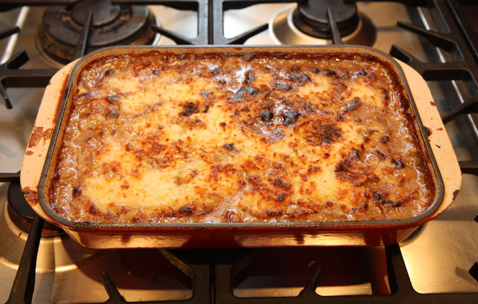

Slow Cooker Lasagna

Description
This slow cooker lasagna has layers of tender noodles, rich tomato sauce, and melted cheese.
Best of all, the slow cooker does the cooking.
Ingredients
- 1 pound lean ground beef
- 1 medium onion, chopped
- 2 teaspoons minced garlic
- 1 (29 ounce) can tomato sauce
- 1 (6 ounce) can tomato paste
- 1 ½ teaspoons salt
- 1 teaspoon dried oregano
- 16 ounces shredded mozzarella cheese
- 12 ounces cottage cheese
- ½ cup grated Parmesan cheese
- 1 (12 ounce) package lasagna noodles
Steps
- Gather all ingredients.
- Cook and stir ground beef, onion, and garlic in a large skillet over medium heat until the meat is crumbly and browned.
- Add tomato sauce, tomato paste, salt, and oregano. Stir until well combined and warmed through. Remove from heat.
- Stir mozzarella, cottage cheese, and Parmesan cheese together in a large bowl until well combined. Set aside.
- Spread a layer of meat sauce onto the bottom of a slow cooker.
- Add a double layer of uncooked lasagna noodles, breaking noodles to fit into the cooker as needed.
- Top the noodles with a portion of the cheese mixture.
- Repeat the layering of sauce, noodles, and cheese until all ingredients are used.
- Cover and cook on Low until the noodles are tender, approximately 4 to 6 hours.
Home